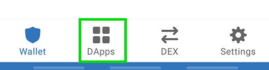

PLU
PLU 
You've made a wallet and gotten your BEP20 tokens, now you just need to connect your wallet with Pluto and you're good to go!
Check out the steps below for how to connect each of our recommended wallets to Pluto.

To connect Trust Wallet follow the steps below. Note that Android and iOS devices do not use the same steps!
1. Open Trust Wallet and tap the DApps button on the bottom of the screen.
Scroll down to "Popular" and tap on "Pluto". You can also find it in "Exchanges".

1. A new page will open with the Pluto logo and some information. Tap the Connect button.

1. Pluto will open up. If you see a Connect button in the top-right tap that and tap Trust Wallet from the list.
If you find you are unable to connect at step 4, go back to the DApps menu and find "Pluto" again. Using "PLU Swap" from the "History" section may result in the same problem.
To connect to Pluto through iOS, Trust Wallet have prepared a detailed guide on using WallteConnect.
Read the Trust Wallet guide to connecting to Pluto via WalletConnect.
Download Trust Wallet (Automatically detects device)

To connect MetaMask to Pluto follow the steps below.
1. Open MetaMask and tap on the burger icon in the top-left.

1. Tap Settings in the menu.
1. In the Settings menu, tap on Network.

1. Tap on the Add Network button at the bottom.

1. On the page that opens, type in the following details:
Network Name: Binance Smart Chain
RPC Url: https://bsc-dataseed.binance.org
Chain ID: 56
Symbol: BNB
Block Explorer URL: http://bscscan.com
Once you've confirmed entry of the new network, go back to the burger menu and tap Browser.

Type "Pluto" into the search field and start the search. The top result will be the Pluto exchange. Tap to enter it.
You wallet will ask you to connect. Tap Connect to connect to Pluto.
Download MetaMask (Automatically detects device)

Token Pocket is a cryptocurrency management app that natively supports many cryptocurrency networks. It also has a desktop application available.
1. Tap the Discover button on the bottom of the main screen.
1. You'll see a DApp browser page open. Under "Recommended", find and tap the Pluto button. If you can't see Pluto under Recommended, you can also find it under "BSC".
1. A window will open saying that you will be opening a third party DApp. Tap I got it and you'll be taken to Pluto's website connected to your wallet.
Resources
Download Token Pocket App (Automatically detects device)
Token Pocket Mobile Setup Guide
1. Open MetaMask and click on the network selector at the top. By default it will show "Ethereum Mainnet". Scroll down and click Custom RPC.
1. A window will open. Type in the details below.
Network Name: Binance Smart Chain
New RPC URL: https://bsc-dataseed.binance.org
Chain ID: 56
Currency Symbol (optional): BNB
Block Explorer URL (optional): http://bscscan.com
1. Make sure you've typed everything in correctly and click Save. Binance Smart Chain will now be one of your network options.
1. Visit the Pluto website. In the top right corner you'll see the Connect button. Click it.
1. A window will appear asking you to choose a wallet to connect to. Click MetaMask (it's the top option on the list).
Download MetaMask (Automatically detects browser)
Remember - NEVER, under any situation, should you ever give someone your private key or recovery phrases.